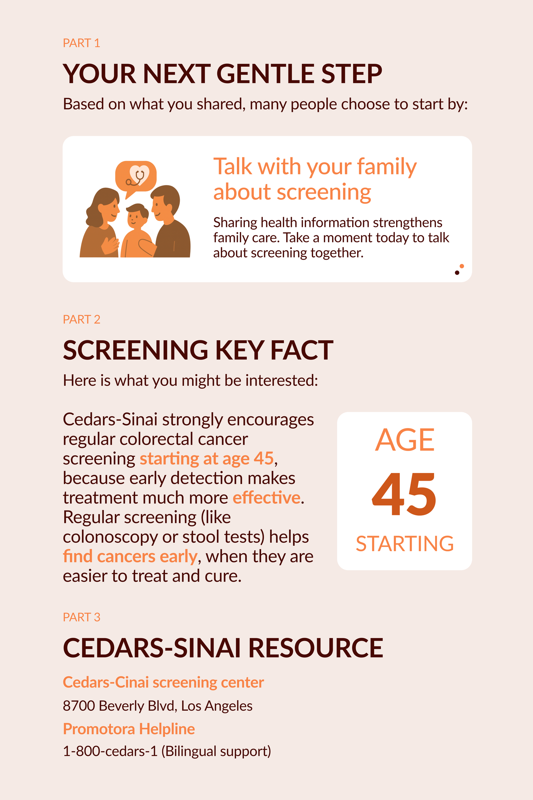
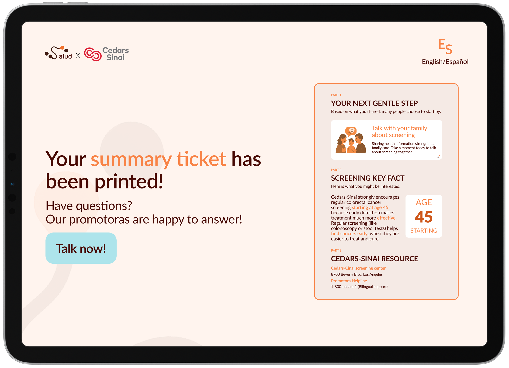

Salud
From Risk Assessment to Trusted Next Steps

Salud is a colorectal cancer screening service concept designed with Cedars-Sinai for Latinx communities in Antelope Valley. It explores how AI can support community health workers (CHWs) rather than replace them. Designed for a grocery-store setting, the service combines a guided kiosk survey, a tailored takeaway, and on-site CHW support to turn screening questions into approachable next steps.
I owned the kiosk’s end-to-end interaction and visual design, including every screen, per-question feedback, privacy interactions, the proposed AI boundaries, and the physical enclosure. The research and the ten survey questions were developed collaboratively by the team.
- Role
- Interaction & Service Designer
- Team
- Balinda Bai
Sabrina Chen
Max Wang - Timeline
- Sep - Dec, 2025
- Partner
- Cedars-Sinai
Context
Cedars-Sinai’s brief asked how AI could help underserved communities connect with cancer-screening resources. We focused on colorectal cancer (CRC) screening for Latinx adults aged 45–80 in Antelope Valley, an area already reached through Cedars-Sinai’s community outreach. Cost concerns, distrust of healthcare systems, and the belief that screening is unnecessary without symptoms can make screening feel distant. Through secondary research and conversations with Cedars-Sinai’s community health workers, known in Spanish-speaking communities as promotoras, we learned how they bridge this gap through shared language, cultural understanding, and trusted relationships.
Pivot
Our early concepts used grocery purchases or self-reported dietary habits to estimate CRC risk. Voluntary input gave users more control over what they shared, but it did not resolve the larger issue. In a public setting, personalized risk scoring could expose sensitive information, create a sense of judgment, and position AI as a medical authority. The problem was not only how the data was collected. It was the assumption that this system should draw cancer-risk conclusions about a person at all.
We deliberately limited AI’s role: it would support informed next steps, not evaluate personal cancer risk.
Final Service
Why Ralphs? We looked for a familiar, nonclinical touchpoint in Antelope Valley, where Cedars-Sinai already conducts outreach. A Ralphs grocery store offered a place residents might already visit regularly, allowing screening information and human support to enter an everyday routine. Its public setting also shaped our boundaries: no personal risk scoring, no risk results on screen, and no data retention without opt-in.
Rather than requiring people to enter the healthcare system to seek information, the service offers a low-pressure starting point within a daily routine. The kiosk extends the reach of Cedars-Sinai’s outreach, while an on-site CHW remains available for questions and personal guidance.
- 1. Discover A “Free Tote Bag” prompt and nearby signage offer a low-pressure reason to approach the kiosk, with an on-site CHW available to introduce the experience.
- 2. Share Users complete a 10-question survey about their screening awareness, concerns, and preferences.
- 3. Learn Each response is followed by short, relevant feedback rather than a score or risk result.
- 4. Take away After completing the survey, users receive a tote bag and a tailored summary with a suggested next step, screening information, and a Cedars-Sinai resource.
- 5. Connect The experience ends with an invitation to speak with the on-site CHW and an optional choice to receive future follow-up from Cedars-Sinai.



Design Decisions
Outcome and Next Validation
Delivered: an end-to-end clickable kiosk prototype with simulated printing, a physical enclosure, a summary ticket, and a souvenir system. In final stakeholder feedback, Cedars-Sinai responded positively to the CHW integration, grocery-store setting, and printed takeaway. The concept was designed for a Ralphs setting; it was not deployed or tested with residents.
Next, I would evaluate whether the grocery-store environment allows people to participate comfortably and validate the experience directly with residents. I would also prototype the printing workflow, localize the experience in Spanish, and define the AI and data-retention rules with clinical and privacy stakeholders. The name field would move to the opt-in screen, so identity enters the system only when someone requests follow-up.
Reflection
This project challenged my assumption that a more capable AI would automatically create a stronger product. In sensitive contexts, more capability can create distance rather than value when a system takes on more authority than people can reasonably trust it to hold. Designing responsible AI is not only about expanding what it can do. It is also about deciding what it should not do.